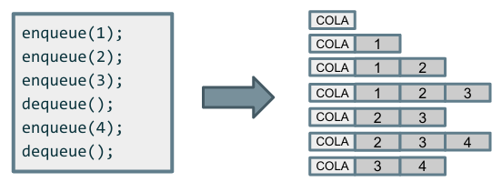

Una cola es una estructura de datos FIFO (First In, First Out), que sigue el principio de "primero en entrar, primero en salir". Esto significa que el primer elemento que se inserta en la cola es el primer elemento que se elimina de la cola.

Son muy útiles en estructuras de datos donde el orden de procesamiento es importante, como colas de impresión, manejo de procesos en sistemas operativos y simulaciones de tráfico.
Los métodos principales de una cola son:
- add(E e): inserta un elemento en la cola y lanza una excepción (IllegalStateException) si la cola está llena*.
- offer(E e): inserta un elemento en la cola y devuelve false si la cola está llena en vez de lanzar una excepción.
- remove(): elimina y devuelve el primer elemento, y lanza excepción si la cola está vacía.
- poll(): elimina y devuelve el primer elemento, y devuelve null si la cola está vacía.
- element(): obtiene el primer elemento sin eliminarlo y lanza excepción si la cola está vacía.
- peek(): obtiene el primer elemento sin eliminarlo y devuelve null si la cola está vacía.
*Una cola está llena cuando ya no puede aceptar más elementos debido a restricciones de memoria o de tamaño predefinido. Esto depende del tipo de implementación de la cola.
Ejemplo en Java usando ArrayBlockingQueue y un tamaño fijo de 3:
import java.util.concurrent.ArrayBlockingQueue;
import java.util.Queue;
public class ColaLlenaEjemplo {
public static void main(String[] args) {
Queue<Integer> cola = new ArrayBlockingQueue<>(3); // capacidad máxima = 3
cola.offer(1);
cola.offer(2);
cola.offer(3);
System.out.println("Cola actual: " + cola); // [1, 2, 3]
// intentamos añadir otro elemento cuando la cola ya está llena
boolean exito = cola.offer(4);
System.out.println("¿Se ha podido añadir el 4? " + exito); // false
}
}
Si usáramos add(4), lanzaría una excepción IllegalStateException. Pruébalo.
Por otro lado, si una cola no tiene un tamaño máximo, técnicamente nunca está "llena", pero puede quedarse sin memoria si se insertan demasiados elementos.
Diferencia entre add() vs offer(), remove() vs poll(), element() vs peek()
✔ Usaremos offer(), poll(), y peek() si queremos evitar excepciones y manejar la cola de forma segura.
✔ Usaremos add(), remove(), y element() si queremos que el programa falle en caso de error.
En Java, la interfaz Queue<E> puede ser implementada por varias clases, pero en este curso nos centraremos en las LinkedList.
import java.util.LinkedList;
import java.util.Queue;
public class EjemploQueue {
public static void main(String[] args) {
Queue<String> cola = new LinkedList<>();
cola.offer("Elemento 1");
cola.offer("Elemento 2");
cola.offer("Elemento 3");
System.out.println(cola.poll()); // "Elemento 1" (eliminado)
System.out.println(cola.peek()); // "Elemento 2" (siguiente en salir)
}
}IMPORTANTE: En una Queue, con offer no podremos insertar elementos en posiciones arbitrarias. Sólo se añaden elementos al final de la cola, y se eliminan desde el principio (FIFO).
Cuando definimos un LinkedList como una cola, los métodos offer(), poll(), y peek() están diseñados para manejar la cola de manera eficiente, mientras que si lo definiéramos como una List podríamos manipular elementos en cualquier índice (add(int index, E element)).